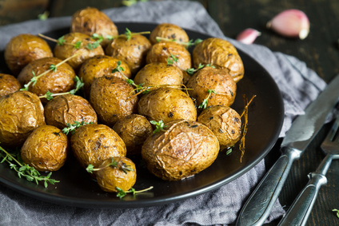

Pečené brambory
Zpět

Popis jídla
Jedná se o jednoduché a velmi flexibilní jídlo, jehož příprava zabere pár minut (pokud nepočítáme pečení jako takové). Funguje jako samotný hlavní chod nebo i jako příloha. Kombinujeme s omáčkami na bázi majonézy nabo podle chuti a osobních preferencí.
Ingredience
- brambory
- olej
- sůl
- pepř
- sladká paprika
- uzená paprika
- chilli
Postup přípravy
- Brambory omyjeme a zbavíme kazů (pokud jsou brambory staré, tak je zbavíme slupky).
- Nakrájíme na přibližně stejné kousky.
- Na plech dáme pečící papír nebo jiné alternativy (pokud nemáme přecházíme rovnou na následující krok).
- Nalijeme dostatečné množství oleje, abychom mohli obalit všechny brambory.
- Brambory vložíme na plech a silně okořeníme (podle osobních preferencí).
- Nahřejeme troubu na 200 °C.
- Brambory pečeme po dobu 25 - 30 minut, nebo do doby doku nebudou měkké a na povrchu křupavé.
- V době pečení můžeme připravit omáčku podle osobních preferencí.
- Servírujeme jako přílohu nebo jako hlavní jídlo v misce nebo v hlubokém talíři.